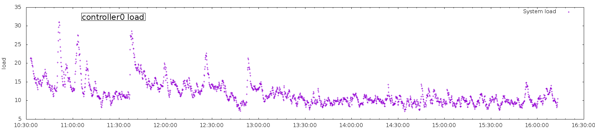
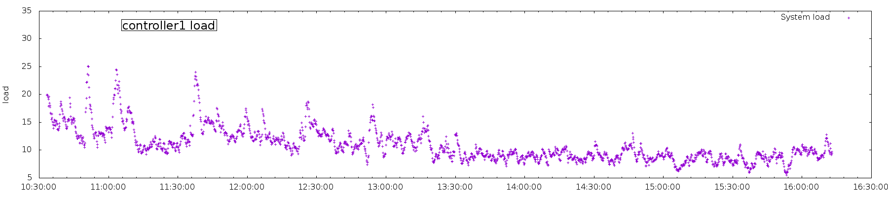
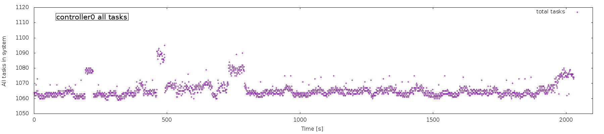
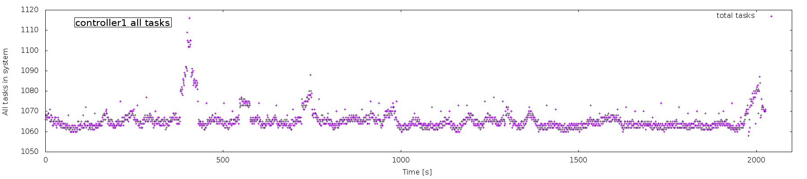
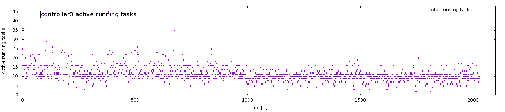
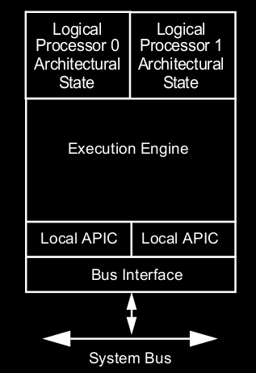
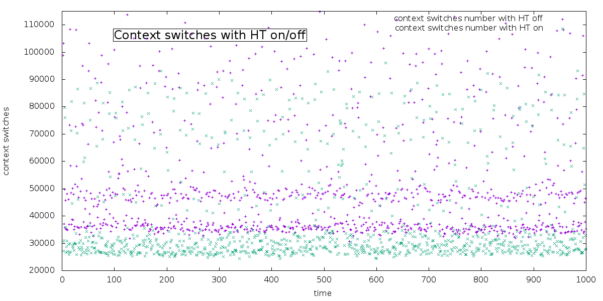
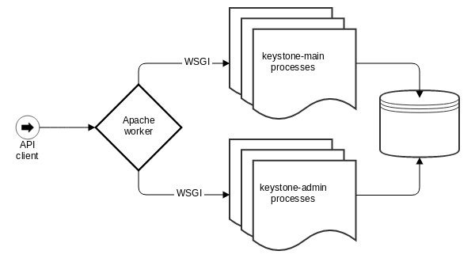
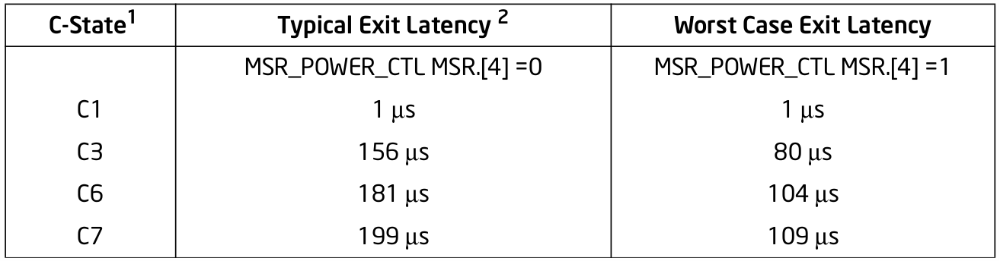

by Radosław Śmigielski / @radoslaws
Know your workload!
What the hell my controller is doing?
Default out of the box configs just work but are these optimal for you?
All apologies - agenda adjustments
On idle controller I've got:
 
 

* We have 48 CPUs ** Graph scaled to 48 CPUs
Sounds controversial, isn't it?
Reduce number of tasks to 800 (processes, threads)
CPU context switches dropped to 10-25k
Reduce load of idle controller by half (!!!)
No difference in speed of API responses
"To be or not to be?" type of question
HT on or HT off?
on computes? on controllers?
How does it really work?
Intel Intel® 64 and IA-32 Architectures Software Developer’s Manual
Hyper-Threaded CPU core split into two logical cores each of which has its own processor architectural state. Each logical processor can be individually halted, interrupted or directed to execute a specified thread, independently from the other logical processor sharing the same physical core.[7] logical processors in a hyper-threaded core share the execution resources

Old style config
/etc/keystone/keystone.conf
[DEFAULT]
public_workers=48
admin_workers=48
(*) Exception?
How does it really work?
WSGI - Web Server Gateway Interface
Doing multiprocess/multithread apps is tough
Python GIL does not make things easier
Python concurrency frameworks suck on computation intensive workload
CPU intensive PKI and Fernet token formats
Apache and other web servers have solved this problem
/etc/httpd/conf.d/10-keystone_wsgi_admin.conf
WSGIDaemonProcess keystone_admin \
display-name=keystone-admin \
group=keystone \
processes=48 \
threads=1 \
user=keystone
/etc/httpd/conf.d/10-keystone_wsgi_main.conf
WSGIDaemonProcess keystone_main \
display-name=keystone-main \
group=keystone \
processes=48 \
threads=1 \
user=keystone
How does it really work?

processor.max_cstate=0 intel_idle.max_cstate=0
So what is blktrace?
It generates traces of the I/O traffic on block devices
Kind of strace for kernel IO subsystem
Simple usage example:
mkdir /home/blktrace_data
mount -t tmpfs -o size=4G tmpfs /home/blktrace_data
cd /home/blktrace_data
blktrace -d /dev/sda -o blktrace.sda
Process collected data with blkparse and btt
Output example:
8,0 21 42 1.062957473 13346 I WS 6298096 + 1024 [mysqld]
8,0 21 43 1.062957727 13346 I WS 6299120 + 1024 [mysqld]
8,0 38 3 1.084362511 10509 Q WS 745497296 + 16 [mongod]
8,0 38 8 1.084367140 10509 D WS 745497296 + 16 [mongod]
8,0 22 2 1.138026726 13346 Q WSM 4738447 + 7 [mysqld]
8,0 22 3 1.138027999 13346 G WSM 4738447 + 7 [mysqld]
8,0 22 5 1.138029018 13346 I WSM 4738447 + 7 [mysqld]
8,0 1 1904 1.138074893 930 D W 67843304 + 8 [systemd-journal]
blktrace_api.h - trace actions
Q __BLK_TA_QUEUE , /* queued */
B __BLK_TA_BACKMERGE, /* back merged to existing rq */
F __BLK_TA_FRONTMERGE, /* front merge to existing rq */
G __BLK_TA_GETRQ, /* allocated new request */
S __BLK_TA_SLEEPRQ, /* sleeping on rq allocation */
R __BLK_TA_REQUEUE, /* request requeued */
I __BLK_TA_ISSUE, /* sent to driver */
C __BLK_TA_COMPLETE, /* completed by driver */
P __BLK_TA_PLUG, /* queue was plugged */
U __BLK_TA_UNPLUG_IO, /* queue was unplugged by io */
T __BLK_TA_UNPLUG_TIMER, /* queue was unplugged by timer */
__BLK_TA_INSERT, /* insert request */
__BLK_TA_SPLIT, /* bio was split */
__BLK_TA_BOUNCE, /* bio was bounced */
R __BLK_TA_REMAP, /* bio was remapped */
A __BLK_TA_ABORT, /* request aborted */
__BLK_TA_DRV_DATA, /* binary driver data */
barrier: barrier attribute
complete: completed by driver
fs: requests
issue: issued to driver
pc: packet command events
queue: queue operations
read: read traces
requeue: requeue operations
sync: synchronous attribute
write: write traces
notify: trace messages
drv_data: additional driver specific trace
blktrace_api.h - trace categories
R BLK_TC_READ /* reads */
W BLK_TC_WRITE /* writes */
F BLK_TC_FLUSH /* flush */
S BLK_TC_SYNC /* sync */
Q BLK_TC_QUEUE /* queueing/merging */
BLK_TC_REQUEUE /* requeueing */
I BLK_TC_ISSUE /* issue */
C BLK_TC_COMPLETE /* completions */
BLK_TC_FS /* fs requests */
P BLK_TC_PC /* pc requests */
N(?) BLK_TC_NOTIFY /* special message */
A BLK_TC_AHEAD /* readahead */
M BLK_TC_META /* metadata */
D BLK_TC_DISCARD /* discard requests */
BLK_TC_DRV_DATA /* binary driver data */
U BLK_TC_FUA /* fua requests */
E(?) BLK_TC_END /* we've run out of bits! */
Someting what you know but you've never read it that way? [top]
[hyperthreading]
OpenStack services' workers